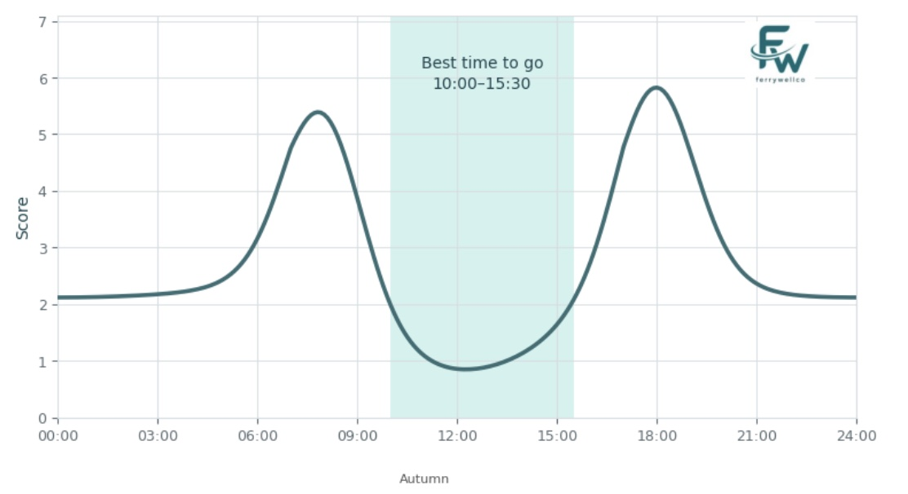

GOTime · Buiten bewegen
Wanneer ga je hardlopen?
In de ochtend en avond kunnen hitte en fijnstof (PM2.5) sterk verschillen. GOTime zet beide naast je geplande hardloopronde, wandeling of fietstocht. Zo kun je een geschikter tijdstip en een betere plek kiezen voordat je vertrekt.

GOTime
De metingen zijn er. De keuze moet je nog zelf maken.
Een hardloopclub heeft om 18.00 uur een training gepland. In de middag neemt de hitte toe en de hoeveelheid PM2.5 kan gedurende de dag veranderen. Houdt de groep vast aan dit tijdstip, begint zij in de ochtend of kiest zij een andere plek?
GOTime laat de verwachting voor hitte en PM2.5 voor deze training zien naast andere mogelijkheden. De organisator kan 18.00 uur met 08.00 uur vergelijken, of de ene plek met de andere.
- Kies de activiteit
- Stel tijd en plaats in
- Vergelijk geschikte momenten

Hoe het werkt
Begin bij de activiteit en bekijk daarna de verwachting.
Een plek, een tijdstip en een activiteit geven de weersverwachting betekenis. GOTime zet schattingen van hitte en PM2.5 naast je plan en laat zien hoe alternatieven zich verhouden. Je hoeft de afzonderlijke metingen dan niet zelf naast elkaar te leggen.
Lees over de wetenschapMeer dan GOTime
Een hardloper, een locatiemanager en een verzekeraar hebben andere vragen.
We passen dezelfde analyse van hitte en PM2.5 toe op buitenwerk, apps en wearables, en de omgeving van gebouwen en installaties.
BuitenwerkersAnalyse van hitte en luchtkwaliteit op locatie voor teams die zwaar buitenwerk plannen.
PartnerplatformsEen verwachting voor hitte en PM2.5 in apps voor beweging, kaarten en wearables.
Lokale omgevingRuimtelijke analyse rond gebouwen en infrastructuur, waaronder datacenters.
Wetenschappelijke basis
Ons werk begint bij onderzoek naar PM2.5, hitte en hart- en vaatgezondheid.
De gevolgen van fijnstof en hitte voor de gezondheid zijn afzonderlijk goed onderzocht. Hun gezamenlijke effect in een specifieke situatie is nog onderwerp van onderzoek. Dat verschil nemen we mee wanneer we informatie voor buitenactiviteiten presenteren.
Bekijk het onderzoekOns team
Twee onderzoekers en twee productbouwers in Amsterdam.
FerryWellCo ontstond uit onderzoek naar hitte, PM2.5 en hart- en vaatgezondheid. Met GOTime maken we dat onderzoek bruikbaar op het moment dat iemand kiest waar en wanneer die buiten actief is.
Ondersteund door DLAB Amsterdam Dive

Neem contact op
Vertel ons wat je van plan bent.
Doe mee aan de GOTime-pilot als hardloper of club, bespreek een integratie met je app of vertel ons welke beslissing jouw organisatie buiten moet nemen.